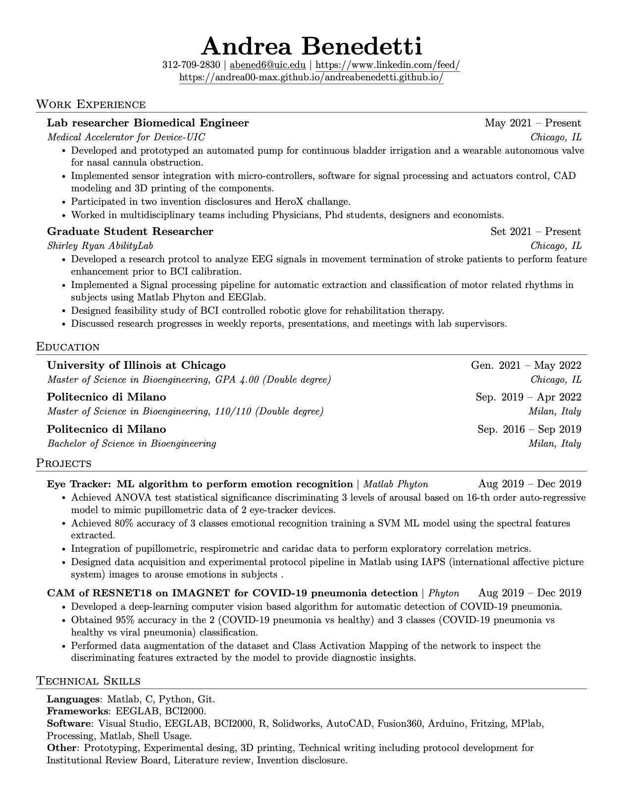
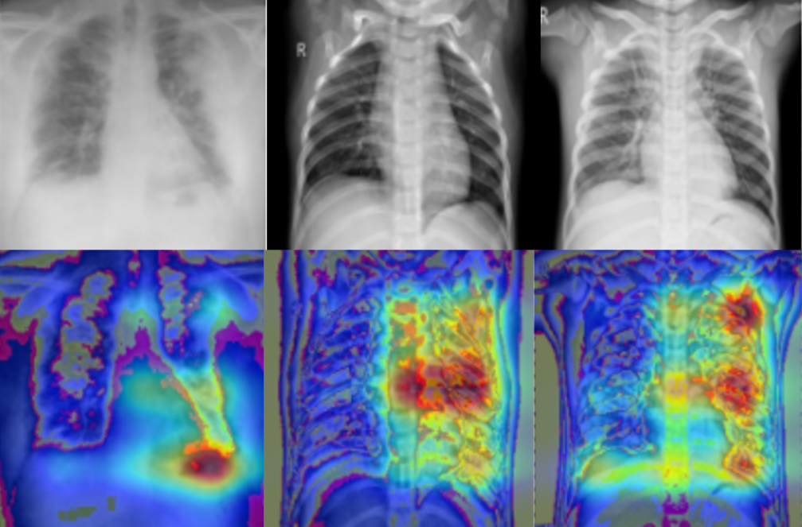
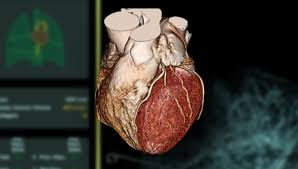

Bioengineer, always concerned with breakthrough technologies, considering human-to-computer interfaces necessary for sustainable progress and to improve the quality of life.
I have experience in the full product development cycle in research labs both related to device prototyping for companies and both to the design of rehabilitation therapies in hospitals, collaborating with multi-disciplinary teams.
Outside of work I pursue my interests by doing mountaineering and playing the guitar.


Extraction of sensorimotor rhytmhs and analysis of Event related Synchronization related to grasp release task.

Developement of an algorithm to detect toracic x-ray images with covid induced pneumonia from healthy subject and patients with non-covid related pneumonia.
This work is inserted in the scope of the technology for ocular tracking.
We performed the comparative analysis of the signal recorded by two different devices, the fixed and the mobile one, and the correlation between the autonomic nervous system (SNA) activity and the pupil dilatation signal due to the emotional stimulus induced by IAPS images.

Donec eget ex magna. Interdum et malesuada fames ac ante ipsum primis in faucibus. Pellentesque venenatis dolor imperdiet dolor mattis sagittis magna etiam.